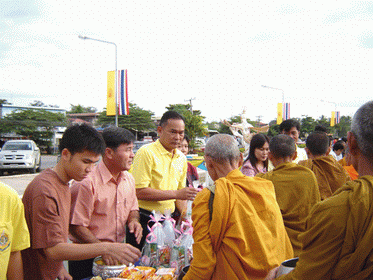

|
วันขึ้นปีใหม่
นำเสนอโดย...พระมหาบุญโฮม ปริปุณฺณสีโล (ไชยฤทธิ์) วัดท่าไทร จ.สุราษฎร์ธานี |
|
ความหมายของ วันขึ้นปีใหม่ วันขึ้นปีใหม่ ตามพจนานุกรม ฉบับราชบัณฑิตยสถาน ให้ความหมายของคำว่า ปี ไว้ดังนี้ ปี หมายถึง เวลา ชั่วโลกโคจรรอบดวงอาทิตย์ครั้งหนึ่งราว ๓๖๕ วัน : เวลา ๑๒ เดือนตามสุริยคติ วันขึ้นปีใหม่ คือวันแรกของปี มักจะมีการเฉลิมฉลองอย่างยิ่งใหญ่ และนับเป็นวันสำคัญของปี ปัจจุบันกำหนดให้วันที่ ๑ มกราคม เป็นวันขึ้นปีใหม่สากล ตามปฏิทินเกรกอเรียน และถือเป็นวันหยุดต่อมาจากวันสิ้นปี อย่างไรก็ตาม ในแต่ละชาติที่ใช้ปฏิทินแบบอื่น ก็จะมีวันขึ้นปีใหม่ที่แตกต่างกันไป เช่น วันตรุษจีน วันสงกรานต์ เป็นต้น ความเป็นมาของ วันขึ้นปีใหม่ ต่อมาได้ถือเอาทาง สุริยคติแทน โดยกำหนดให้วันที่ ๑ เมษายน เป็นวันขึ้นปีใหม่ ตั้งแต่ พ.ศ. ๒๔๓๒ เป็นต้นมา อย่างไรก็ตาม ประชาชนส่วนใหญ่โดยเฉพาะตามชนบท ยังคงยึดถือเอาวันสงกรานต์เป็นวันขึ้นปีใหม่อยู่ต่อมา เมื่อมีการเปลี่ยนแปลงการปกครองมาเป็นระบอบประชาธิปไตย ทางราชการเห็นว่าวันขึ้นปีใหม่วันที่ ๑ เมษายน ไม่สู้จะมีการรื่นเริงอะไรมากนัก สมควรที่จะฟื้นฟูขึ้นมาใหม่ จึงได้ประกาศให้มีงานรื่นเริงวันขึ้นปีใหม่ในวันที่ ๑ เมษายน ๒๔๗๗ ขึ้นใน กรุงเทพฯ เป็นครั้งแรก การจัดงานวันขึ้นปีใหม่ที่ได้เริ่มเมื่อวันที่ ๑ เมษายน ได้แพร่หลายออกไปต่างจังหวัดในปีต่อๆมา และในปี พ.ศ. ๒๔๗๙ ก็ได้มีการ จัดงานรื่นเริงปีใหม่ทั่วทุกจังหวัด วันขึ้นปีใหม่วันที่ ๑ เมษายน ในสมัยนั้นทางราชการเรียกว่า วันตรุษสงกรานต์ ต่อมาได้มีการพิจารณาเปลี่ยนวันขึ้นปีใหม่อีกครั้งหนึ่ง โดยคณะรัฐมนตรีได้แต่งตั้งคณะกรรมการขึ้น ซึ่งมีหลวงวิจิตรวาทการ เป็นประธานกรรมการ ที่ประชุมมีมติเป็นเอกฉันท์ให้เปลี่ยนวันขึ้นปีใหม่เป็นวันที่ ๑ มกราคม โดยกำหนดให้วันที่ ๑ มกราคม ๒๔๘๔ เป็น วันขึ้นปีใหม่เป็นต้นไป เหตุผลที่ทางราชการได้เปลี่ยนวันขึ้นปีใหม่จากวันที่
๑ เมษายน มาเป็นวันที่ ๑ มกราคม .- ประเพณีวันขึ้นปีใหม่ เริ่มตั้งแต่วันที่ ๓๑ ธันวาคม ถึงวันที่ ๑ มกราคม ของทุกปี
๑.
เพื่อเป็นการฉลองชีวิตของคนที่อยู่รอดปลอดภัยในระหว่างปีที่ผ่านมาเป็นการส่งท้ายปีเก่าต้อนรับปีใหม่
ซึ่งเป็นการเริ่มต้นชีวิตในวันใหม่ ด้วยการทำความดีและทำบุญทำทาน เพื่อความเป็นสิริมงคล
และความเจริญรุ่งเรืองในการดำเนินชีวิตในปีใหม่นั้น ๆ ต่อไป วัดท่าไทร จัดให้มีพิธีเค้าท์ดาวน์นับถอยหลัง ส่งท้ายปีเก่า-ต้อนรับปีใหม่ เป็นประจำทุกปี
วัดท่าไทร
ร่วมกับประชาชนพุทธบริษัท จัดให้มีพิธีเค้าท์ดาวน์นับถอยหลัง ส่งท้ายปีเก่า-ต้อนรับปีใหม่
เป็นประจำทุกปี ในวันที่ 31 ธันวาคม ของทุกปี โดยเริ่มพิธีตั้งแต่เวลา
๒๓.๐๐ น. เป็นต้นไป จนกระทั่งเสร็จพิธี(ประมาณ ๐๐.๓๐ น. ของวันที่
๑ มกราคม) เพื่อเป็นการอนุรักษ์ประเพณี วัฒนธรรมอันดีงามวิถีพุทธของไทย
ร่วมเจริญจิตภาวนาฝึกอบรมจิตใจ เสริมสร้างบารมีธรรม เพิ่มสิริมงคล
เสริมดวงชะตาให้แก่ชีวิต รับพร รับสิริมงคล และรับน้ำพระพุทธมนต์จากพระสงฆ์
โดยมี พระเดชพระคุณ พระเทพพิพัฒนาภรณ์ (พระมหาชูชาติ) เจ้าอาวาสวัดท่าไทร
และเจ้าคณะจังหวัดสุราษฎร์ธานี เป็นประธานสงฆ์ ณ ศาลาการเปรียญวัดท่าไทร
ต.ท่าทองใหม่ อ.กาญจนดิษฐ์ จ.สุราษฎร์ธานี กิจกรรมที่ชาวไทยส่วนใหญ่มักจะยึดถือปฏิบัติในวันขึ้นปีใหม่ได้แก่
๑.ทำบุญตักบาตร
โดยอาจตักบาตรที่บ้าน หรือไปที่วัดหรือตามสถานที่ต่างๆที่ทางราชการเชิญชวนไปรวมทำบุญ วันขึ้นปีใหม่นับเป็นโอกาสดีที่จะทำให้เราได้ทบทวนถึงการดำเนิน ชีวิตในอดีต เพื่อจะได้แก้ไขข้อบกพร่องที่เกิดขึ้นในอดีตให้ดีขึ้น ประเพณีวันขึ้นปีใหม่ มีกิจกรรมที่ควรอนุรักษ์ฟื้นฟู และส่งเสริมให้มีการถือปฏิบัติและสืบทอดต่อไป ได้แก่
๑.
การทำความสะอาดที่อยู่อาศัย อาคารสถานที่ต่าง ๆ เช่น วัด โรงเรียน
สถานที่ทำงาน รวมทั้งเครื่องนุ่งห่มต่าง ๆ เพื่อต้อนรับปีใหม่ กิจกรรมใน
วันขึ้นปีใหม่ ครั้นถึงวันที่ ๓๑ ธันวาคม ก็จะมีการทำบุญเลี้ยงพระ ไปวัดเพื่อประกอบกิจกุศลต่างๆ เช่น ฟังพระธรรมเทศนา ถือศีลปฏิบัติธรรม แต่บางคนก็แค่ทำบุญตักบาตร ตอนกลางคืนบางแห่งอาจจัดเทศกาลกินเลี้ยงเป็นที่ครื้นเครงสนุกสนาน เพื่อเป็นการเฉลิมฉลองส่งท้ายปีเก่าต้อนรับปีใหม่ วันที่ ๑ มกราคม ของทุกปี จะมีการทำบุญตักบาตรและอุทิศส่วนกุศลผู้ที่ล่วงลับไปแล้ว ฟังเทศน์ ปล่อยปลา ปล่อยนก อวยพรซึ่งกันและกัน หรืออาจจะส่งการ์ดบัตรอวยพร ของขวัญไหว้ผู้ใหญ่เพื่อรับพร และสรงน้ำพระพุทธรูป กลางคืนมีการละเล่นพื้นบ้าน หรือจัดมหรสพมาฉลอง แนวทางที่ควรทำเพื่อให้เกิดความมั่นคงแห่งประเพณีวัฒนธรรมไทย
๑.
การให้ความรู้ ความเข้าใจที่ถูกต้องเกี่ยวกับคุณค่า และความสำคัญของประเพณีวันขึ้นปีใหม่
โดยการดำเนินงานในหลากหลายรูปแบบและครอบคลุมอย่างกว้างขวาง ทั่วถึง
ได้แก่ เพลงวันปีใหม่
(เพลงพรปีใหม่ เพลงพระราชนิพนธ์ในหลวง)
สวัสดีวันปีใหม่พา
ให้บรรดาเราท่านรื่นรมย์ เกี่ยวกับ เพลงพรปีใหม่ เพลงพระราชนิพนธ์ พรปีใหม่ เป็นเพลงพระราชนิพนธ์ลำดับที่ ๑๓ ทรงพระราชนิพนธ์ขึ้นในเดือนธันวาคม พ.ศ. ๒๔๙๔ เมื่อเสด็จนิวัตพระนคร และประทับ ณ พระตำหนักจิตรลดารโหฐาน พระราชวังดุสิต มีพระราชประสงค์ที่จะพระราชทานพรปีใหม่ แก่บรรดาพสกนิกรไทยด้วยเพลง จึงทรงพระราชนิพนธ์เพลง "พรปีใหม่" และทรงพระกรุณาโปรดเกล้าฯ ให้พระเจ้าวรวงศ์เธอ พระองค์เจ้าจักรพันธ์เพ็ญศิริ นิพนธ์คำร้องเป็นคำอำนวยพรปีใหม่ แล้วพระราชทานแก่วงดนตรี ๒ วง คือ วงดนตรีนิสิตจุฬาลงกรณ์มหาวิทยาลัย นำออกบรรเลง ณ จุฬาลงกรณ์มหาวิทยาลัย และวงดนตรีสุนทราภรณ์ นำออกบรรเลง ณ ศาลาเฉลิมไทย ในวันปีใหม่ วันอังคารที่ ๑ มกราคม พ.ศ. ๒๔๙๕ ข้อมูลที่ควรอ่านเพิ่มเติม.- ขอขอบคุณ.ภาพประกอบจาก.... ฅนไทยดอทคอม และ http://www.cordialcard.com/Front-News/2009-10-29-06-34-05.html |